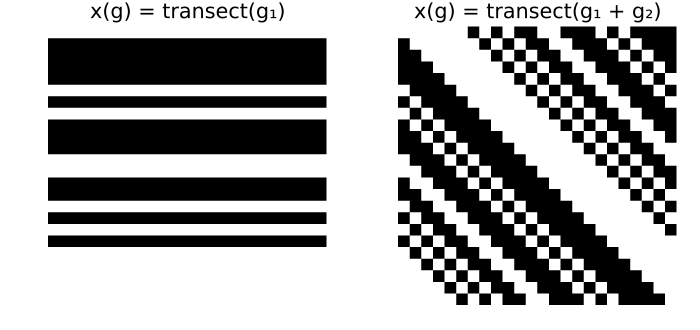
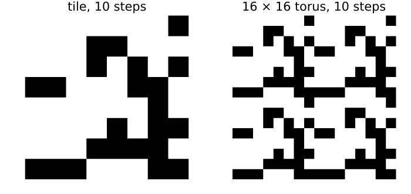

Generalised cellular automata
Simon Frost
- Overview
- Homomorphisms and pullbacks
- Generalised cellular automata
- Composition
- Pushforward and pullback commute
- Periodic landscapes
Overview
A cellular automaton maps configurations over one group to configurations over the same group. Generalised cellular automata relax this: given a group homomorphism φ : H → G, a φ-cellular automaton maps configurations over G to configurations over H (Castillo-Ramirez et al. 2025, 2026). This covers moves between spaces that modellers make all the time: from a small periodic tile to a large torus, from a one-dimensional transect to a two-dimensional field, from a fine grid to a coarse one. This vignette introduces homomorphisms, pullbacks and generalised automata, and checks their composition and factorisation.
ENV["GKSwstype"] = "100"
using CategoricalCellularAutomata
using CellularAutomataCore: CellularAutomataCore, Life, Torus
using Plots
using RandomHomomorphisms and pullbacks
A group homomorphism φ : H → G respects multiplication: φ(a b) = φ(a) φ(b). Reduction modulo 4 is one from Z_12 to Z_4, and GroupHom checks the property on every pair of elements:
Z12, Z4 = CyclicGroup(12), CyclicGroup(4)
mod4 = GroupHom(h -> h % 4, Z12, Z4)
println([mod4(h) for h in elements(Z12)])[0, 1, 2, 3, 0, 1, 2, 3, 0, 1, 2, 3]A homomorphism moves configurations the other way, by pullback: (φ* x)(h) = x(φ(h)). Pulling a configuration on the four-cell ring back along reduction modulo 4 repeats it three times around the twelve-cell ring:
tile = Configuration(Z4, [1, 1, 0, 0])
println(parent(pullback(mod4, tile)))[1, 1, 0, 0, 1, 1, 0, 0, 1, 1, 0, 0]Two homomorphisms from a torus to a ring turn a transect, a one-dimensional configuration, into a two-dimensional one. The projection onto the first coordinate gives stripes, and the sum of the coordinates gives diagonal stripes:
n = 24
Zn, T2 = CyclicGroup(n), TorusGroup(n, n)
first_coordinate = GroupHom(g -> g[1], T2, Zn)
coordinate_sum = GroupHom(g -> mod(g[1] + g[2], n), T2, Zn)
transect = Configuration(Zn, Int.(rand(Xoshiro(3), n) .< 0.4))
plot(heatmap(parent(pullback(first_coordinate, transect)); c=[:white, :black],
colorbar=false, title="x(g) = transect(g₁)"),
heatmap(parent(pullback(coordinate_sum, transect)); c=[:white, :black],
colorbar=false, title="x(g) = transect(g₁ + g₂)");
layout=(1, 2), size=(700, 330), aspect_ratio=:equal, framestyle=:none)
Generalised cellular automata
A φ-cellular automaton T : A^G → B^H has a memory set S in G and a local rule μ, and reads each cell h of H through φ:
T(x)(h) = μ((x(s φ(h)))_{s ∈ S}).Every one is an ordinary cellular automaton over G followed by the pullback along φ, and that is how it is built and stored. Here elementary rule 30 on the transect is lifted to the torus along the sum of the coordinates, the example of Castillo-Ramirez et al. (2025):
B = FinAlphabet(0:1)
rule30(p) = p[1] ⊻ (p[2] | p[3])
lifted = GeneralizedCA(coordinate_sum, [n - 1, 0, 1], rule30; dom=B)GeneralizedCA over GroupHom(TorusGroup(24, 24) → CyclicGroup(24)) with memory set [23, 0, 1]: [0, 1] → [0, 1]Its value at a cell of the torus depends only on the sum of the cell’s coordinates, so its images are constant along diagonals:
y = lifted(transect)
all(y[(i, j)] == y[(mod(i + 1, n), mod(j - 1, n))] for i in 0:(n - 1), j in 0:(n - 1))truefactorize returns the homomorphism and the ordinary automaton, and == confirms the factorisation:
φ, τ = factorize(lifted)
(τ, lifted == compose(τ, pullback(φ, B)))(CellularAutomaton over CyclicGroup(24) with memory set [23, 0, 1]: [0, 1] → [0, 1], true)Composition
Generalised automata compose. A φ-automaton A^G → B^H followed by a ψ-automaton B^H → C^K is a (φ ∘ ψ)-automaton A^G → C^K, whose memory set is {s φ(t)} in G. Here the lifted rule 30 is followed by Life on the torus, which as an ordinary automaton is one over the identity homomorphism:
life = CellularAutomaton(Life(), Torus(n, n); alphabet=B)
both = compose(lifted, life)
(both.hom == coordinate_sum, length(memory_set(both)), both(transect) == life(lifted(transect)))(true, 7, true)The composite reads seven cells of the transect: Life reads the 3 × 3 square around a cell, whose coordinate sums span five consecutive values, and rule 30 reads one more cell on each side of those.
Pushforward and pullback commute
A map of alphabets f : A → B acts on every cell at once, the pushforward f_*. Here it is a survey that records severe disease (state 2) as present and anything milder as absent. It does not matter whether the survey is taken on the transect and then pulled back to the field, or the transect is pulled back and then surveyed (Castillo-Ramirez et al. 2026):
severity = FinAlphabet(0:2)
present = v -> Int(v == 2)
(compose(pushforward(present, Zn; dom=severity, codom=B), pullback(coordinate_sum, B)) ==
compose(pullback(coordinate_sum, severity), pushforward(present, T2; dom=severity, codom=B)))truePeriodic landscapes
A field made of copies of one tile can be simulated on the tile alone. The reduction π : Z_16 × Z_16 → Z_8 × Z_8 turns a configuration on an 8 × 8 tile into a periodic one on a 16 × 16 torus. Life on the tile followed by the pullback is the pullback followed by Life on the large torus:
B8 = FinAlphabet(Int8[0, 1])
small = CellularAutomaton(Life(), Torus(8, 8); alphabet=B8)
large = CellularAutomaton(Life(), Torus(16, 16); alphabet=B8)
π = GroupHom(g -> mod.(g, 8), TorusGroup(16, 16), TorusGroup(8, 8))
compose(small, pullback(π, B8)) == compose(pullback(π, B8), large)true== checks this for every configuration on the tile, which is to say for every periodic configuration of the large torus with that period. Iterating both ways from one tile shows the same pattern:
x = Configuration(TorusGroup(8, 8), Int8.(rand(Xoshiro(5), 0:1, 8, 8)))
a, b = x, pullback(π, x)
for _ in 1:10
a, b = small(a), large(b)
end
plot(heatmap(parent(a); c=[:white, :black], colorbar=false, title="tile, 10 steps"),
heatmap(parent(b); c=[:white, :black], colorbar=false, title="16 × 16 torus, 10 steps");
layout=(1, 2), size=(700, 330), aspect_ratio=:equal, framestyle=:none)
b == pullback(π, a)trueThe square holds because the two runs use the same rule, and an offset in its neighbourhood names the same cells, through π, on the tile and on the large torus. The next vignette changes the alphabet rather than the group: to vector spaces over a finite field, and to ordered sets.
Castillo-Ramirez, Alonso, Alejandro Vazquez-Aceves, and Angel Zaldivar-Corichi. 2025. Categorical Products of Cellular Automata. https://arxiv.org/abs/2503.21567.
Castillo-Ramirez, Alonso, Alejandro Vazquez-Aceves, and Angel Zaldivar-Corichi. 2026. A Categorical Framework for Cellular Automata. https://arxiv.org/abs/2602.04049.